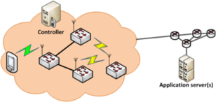

Services
We provide advanced virtual solutions for network caching, prefetching, network function virtualization, flexible functions split, cloud based network services all in an integrated and portable environment.
Some of the main areas in which Telcaria works are:
Open Source Network Virtualization |
Internet Services |
Wireless Networks |
Web Technology development and ICT Solution integration |

- Open source Network Virtualization
- SDN deployments using OpenFlow as southbound protocol:
- Hands-on experience with multiple controllers: RYU, POX & OpenDaylight
- OpenFlow SW switches, such as Open vSwitch or Pantou for OpenWRT
- Experience in deploying medium-to-large scale testbeds
- Experience with OF-Config (with RYU), NETCONF and YANG
- Working on discovery and auto-configuration extensions
- NFV deployments using OpenStack
- Mobility support prototypes using OpenFlow, evaluating multiple alternative approaches and the associated cost
Internet Services
Telcaria has an extensive expertise in architectures and protocols for communications networks, giving different solutions for network topology design, forwarding, routing, communication frameworks, etc. Our work takes a multi-disciplinary approach to the design and understanding of network protocols and architectures.
Wireless Networks
Telcaria has different works in the areas of ad hoc and mesh networks, in particular on routing, and apply them in several contexts. We also explore new programmable interfaces to enhance performance and evolution of networks, specially for future wireless technologies.
Web Technology development and ICT Solutions integration
Telcaria has developed different projects for other SMEs requesting applications for different environments (PC, tablet and smartphone), such as frontends for the visualization of data exchanged in communication networks (e.g. home automation), as well as web plugins and other specific developments. We have also worked with commodity hardware, such as Arduino and FPGAs (more specifically, NetFPGAs).